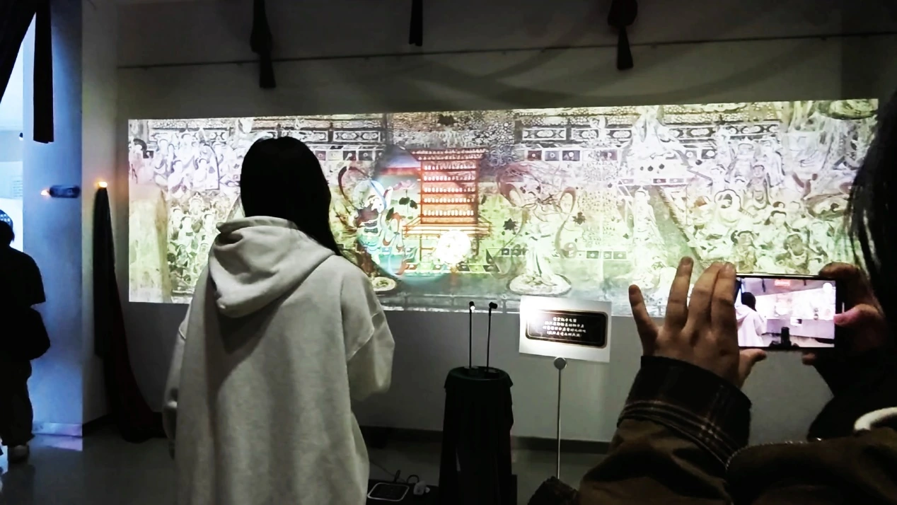
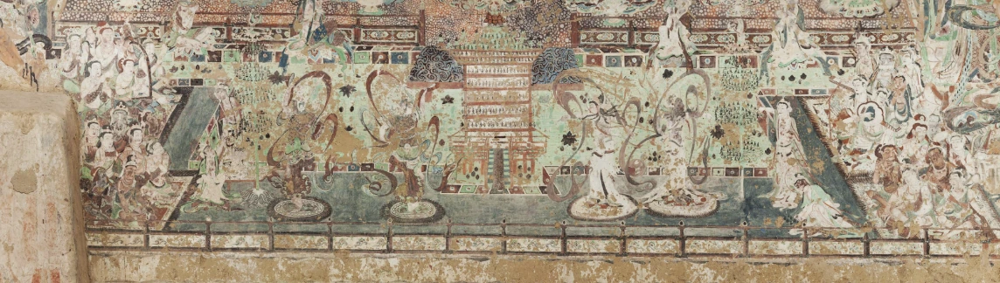
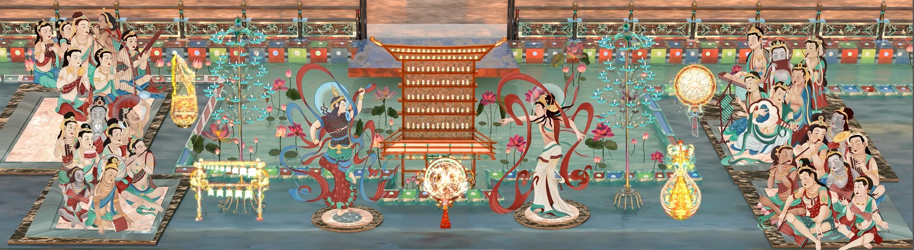
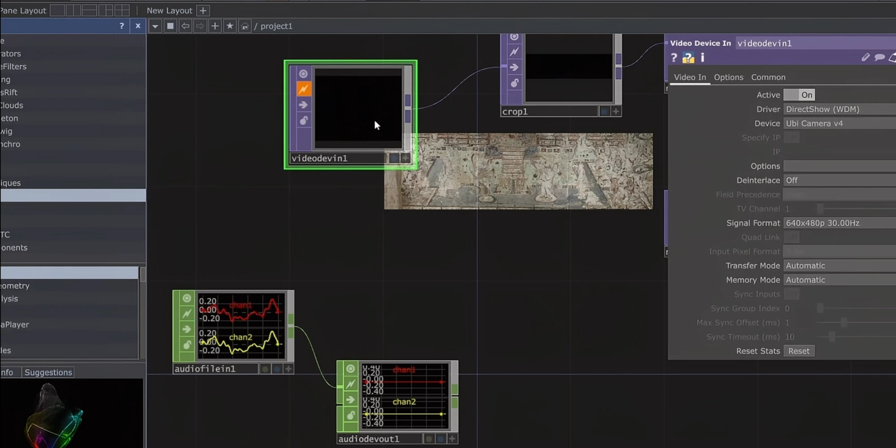
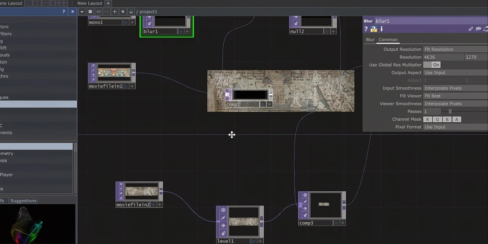
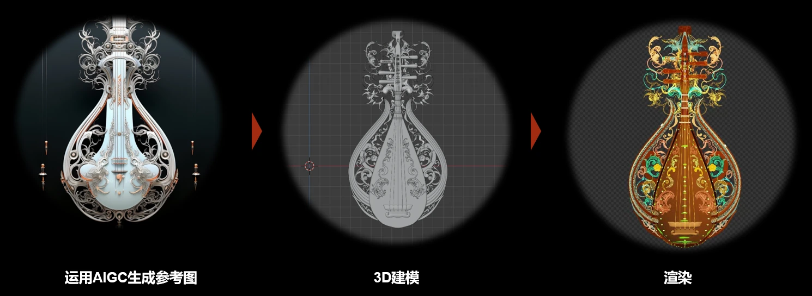
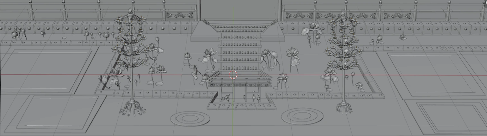
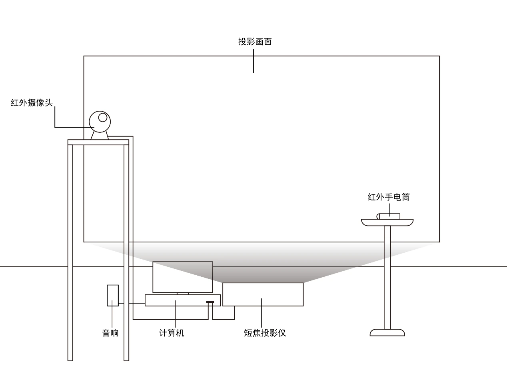
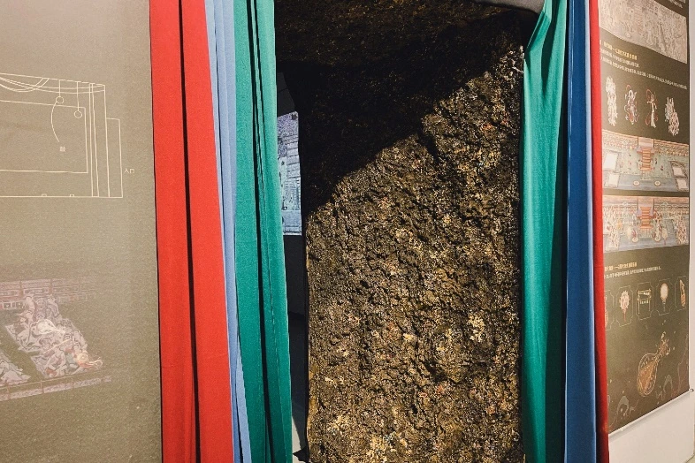

Interactive installation
Dunhuang Fantasy Night
A handheld light opens
a window into a moving mural.
An infrared light lets visitors reveal a digitally reimagined scene within a projected Dunhuang mural. The moving window connects a physical gesture to animated imagery at the scale of a room.
- My contribution
- Interaction implementation, TouchDesigner, animation and video production.
- Project context
- A team-built installation. Visual development, modelling and exhibition construction are presented as team work.

The light decides
what becomes visible.
The mural stays in view. Within the light’s region, a second visual layer appears. Exploration comes from moving between parts of the image, rather than pressing through a fixed sequence.


Move the pointer, tap the image, or use the slider and arrow keys. This is a still-image explanation, not the TouchDesigner installation. The actual installation reads an infrared camera; its animation is shown in the film below.
Aim the light
A handheld infrared light becomes a spatial input in front of the projection.
Reveal a region
The selected area shows the reimagined scene while the surrounding mural remains visible.
Explore in motion
Moving the light changes which part of the animated composition a visitor encounters.
From the exhibition floor
The on-site footage shows the projected image responding as the reveal region moves. It connects the interaction idea to the physical scale and conditions of the installed work.
Watch the complete project film (2 min 39 sec)
What I built
in TouchDesigner
I implemented the interaction system: bringing the camera input into TouchDesigner and connecting the revealed region to the visual layers. The original node screenshots below document that setup.
Camera input
The infrared camera feeds an image into TouchDesigner. The light’s region supplies the spatial input.
Region mask
The image is divided into the illuminated area and its surroundings, which receive different visual content.
Layer composition
The base mural and digitally reimagined animation are combined using that region.
Projection output
The combined image is displayed in the exhibition space, closing the loop between the handheld light and the wall.




The key interaction is a spatial reveal: the light controls which part of the animated scene becomes visible, while the surrounding mural provides a continuous visual reference.
Making the revealed
world move
My contribution also included animation and video production. The team developed the scene through character drawings, 3D modelling and rendered instruments; animation brings those elements into a shared composition.


From figures to animated elements
The original sheets show line drawings and coloured characters. These visual assets form part of the composition prepared for animation.




Reference, model, reinterpretation
The team used AI-generated instrument references alongside 3D modelling and rendering. The result is a contemporary artistic interpretation, not a claim of historically exact reconstruction.
The room is part
of the interface.
The light, camera, projector and visitor have to work together in a physical space. The team’s layout and installation photographs show how the digital interaction was situated in an exhibition.




Keep the camera’s view clear
The report describes placing the camera higher to reduce the risk of visitors blocking its view.
Keep equipment out of the path
The short-throw projector and computer sit close to the wall, with the light available for visitors to pick up.
Frame the experience
The entrance, fabric and surrounding display establish a setting for encountering the projected mural.
What the installation shows,
and what comes next
This work demonstrates an implemented spatial interaction and the production pipeline behind it. It does not measure learning, cultural understanding or visitor engagement.
A next evaluation would examine whether visitors discover the light’s function, how occlusion affects the reveal, and how people take turns in front of the projection. Instrument-specific audio and multi-person coordination would need separate verification.
Project documentation: the original team design report, portfolio boards, animation and exhibition film. My contribution is stated separately from team production. Historical mural imagery is credited in the original report to the 中华珍宝馆 app; source materials identify the scene as the music and dance imagery of Mogao Cave 220.